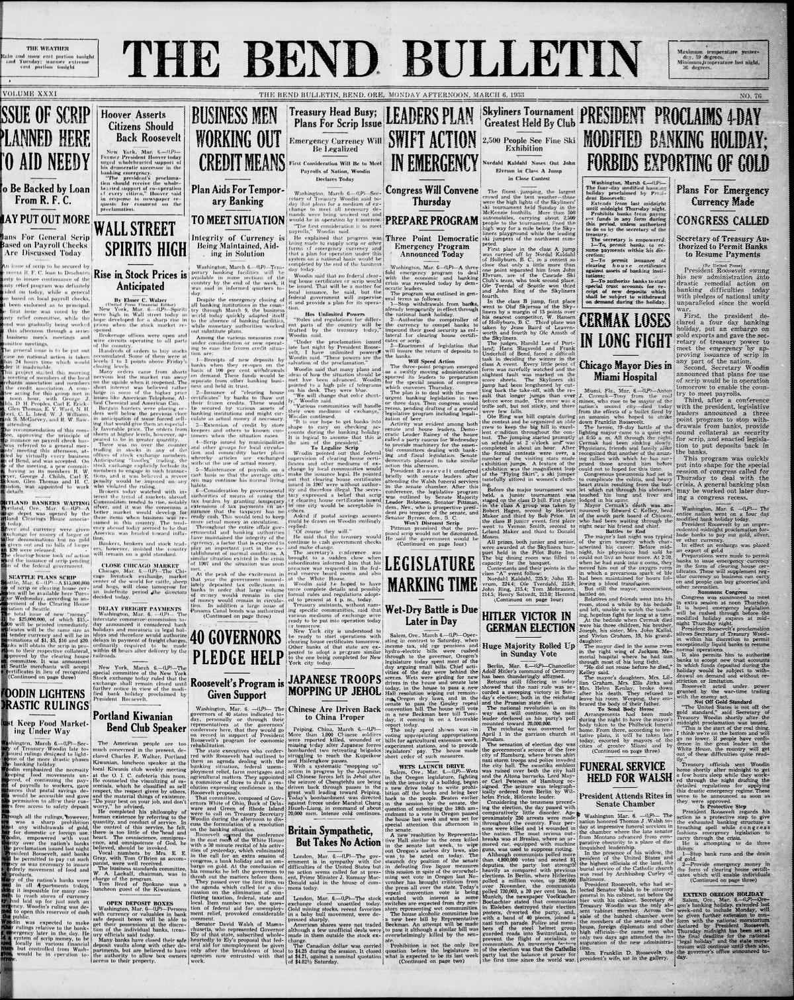

HN-480: National banking holiday declared
HN-480 · March 6, 1933 · Economy, Labor & Industry > Banking, Finance & Currency > Banking systems

page scanRecorded finding
Discovery narrative
Source: Decatur Daily Democrat, p. 1 — original page; Federal Reserve history of the bank holiday.
Report: The newspaper announced a banking holiday as Franklin D. Roosevelt's new administration confronted collapsing confidence in banks and withdrawals around the country.
Assessment: Roosevelt temporarily closed national banking operations beginning March 6; the Emergency Banking Act followed March 9, and vetted institutions reopened in stages. “Holiday” did not mean the crisis was over or every account had been permanently confiscated. The headline records the first emergency measure, not a completed recovery.
Original archive images (3)
Authentic images retrieved from Historic Oregon Newspapers (University of Oregon), Hoosier State Chronicles (Indiana State Library) and Marxists Internet Archive (Daily Worker). Article crops are located using the archive's own OCR word coordinates and rendered at native crop resolution; article clips are assembled from the archive's own article-block images; page images marked "archive tiles" are stitched from the archive's own tiled page service at its 256-px tile cap; page images marked "issue PDF" are single pages rasterised from the archive's own issue PDF, with the page chosen by matching the headline against the PDF's text layer; page scans are reduced-size access renditions. No images were generated, mocked, or retouched.

Historic Oregon Newspapers (University of Oregon)
Open larger view · Archive viewer (full resolution)

Hoosier State Chronicles (Indiana State Library)
Open larger view · Archive viewer (full resolution)

Marxists Internet Archive (Daily Worker)
Open larger view · Archive viewer (full resolution)
Source acquisition
Status: Archive images acquired
Authentic archive-owned image renditions were retrieved for this record and are displayed above. The source-acquisition manifest preserves the original pre-acquisition feasibility assessment.
Original seed
URL (preserved verbatim): https://newspapers.library.in.gov/?a=d&d=DCDD19330306.1.1
Saved research report: Historical_Newspaper_Event_Research_478-502_2026-10-23.md
Evidence note: A newspaper report means a historical publication made a claim; it does not establish that claim as fact. Contemporary reporting is separated from later scholarly context and our own assessment.